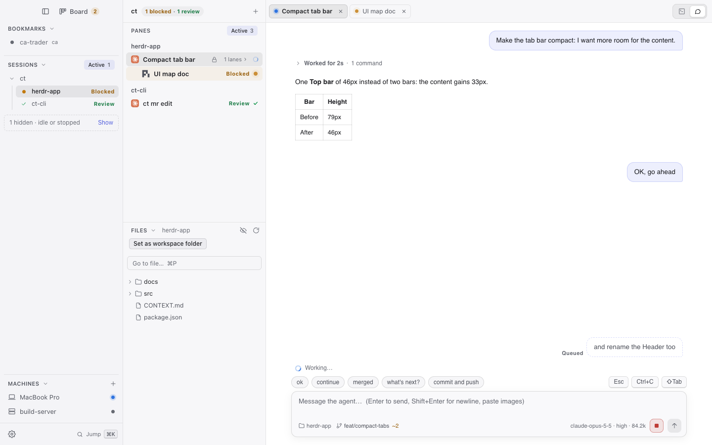
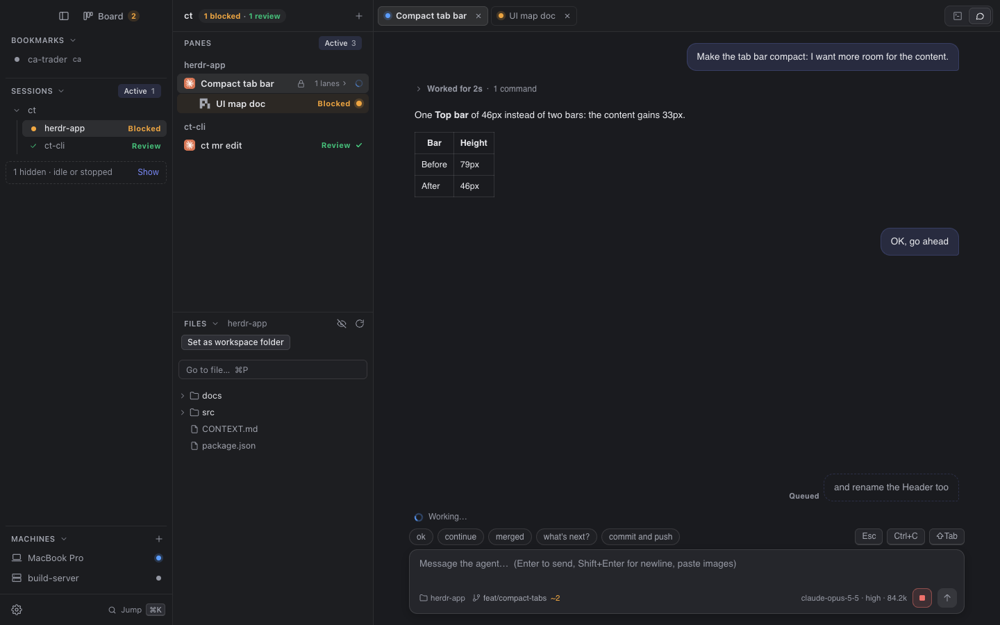

The names to use for each part of the screen, in issues, specs and prompts. The picture is the real app rendered from its components with sample data (2026-10-10). Point at a number or a name to see the area. The same names are in CONTEXT.md › UI surfaces; mise run docs:ui-map redraws this page.


The left column: Bookmarks, Sessions, Machines.
src/sidebar/Sidebar.tsxBeside the traffic lights: ⌘B hides the Sidebar, ⇧⌘B the Agents column too.
src/main/LayoutControls.tsxOpens the Agent Board (⇧⌘D); the count is the agents that need you.
.board-btn in LayoutControlsWorkspaces pinned to the top; a closed one waits under the same name.
useLayout().bookmarksAll | Active on the Sessions header.
useSessionFilter (src/sidebar/activeFilter.ts)A Session in the Sidebar.
SessionRowA Workspace with agent work, under its Session row.
ProjectRows“N hidden · idle or stopped”: what the Active filter hides, with Show.
.filter-hidden in GroupTreeThe machines herdr runs on, local and over SSH.
li.machine in SidebarThe middle column, headed by the Session name and PANES.
src/agents/AgentList.tsx“1 blocked · 1 review”: steps to the next pane that needs you.
SessionQueueChipAll | Active on the PANES header.
usePaneFilter, PanesHeaderA Workspace's name over its Pane rows; + starts an agent in it.
.ws-head in AgentListA Pane: agent mark, title, lock, status.
AgentCard“N lanes ›” on an orchestrator's Pane row.
.lane-toggle in AgentListUnder the Pane rows; ⌘E focuses it.
src/files/FilesPanel.tsx⌘P: find a file by name in the panel's root.
src/files/GoToFile.tsxThe folders and files under the root.
src/files/FileTree.tsxThe main area's one bar, as tall as the columns' heads: the Open strip, then the Lens switch.
src/main/TopBar.tsxThe tabs of open Agents and files. Two tabs of one name say where they live; the tooltip has the whole path.
src/main/OpenStrip.tsxTerminal | Chat for the selected Pane, as two icons.
src/main/LensSwitch.tsxThe Pane's Transcript as a conversation. Its twin is the Terminal lens.
src/chat/ChatLens.tsxOne turn's work folded under “Worked for …”.
src/chat/WorkBlockView.tsxSent mid-turn, not read by the agent yet.
src/chat/QueuedMessages.tsxThe spinner and “Working 1m 23s”, counted from the prompt, while the agent works.
src/chat/WorkingIndicator.tsxQuick replies above the message box.
.composer-quick in ComposerEsc, Ctrl+C, ⇧Tab sent to the agent as keys.
.composer-keys in ComposerThe message box.
src/chat/Composer.tsxFolder, branch and changed files of the Pane's directory.
GitStatusLine (src/chat/GitStatus.tsx)Model · reasoning effort · context used.
.composer-model, src/chat/modelLabel.ts